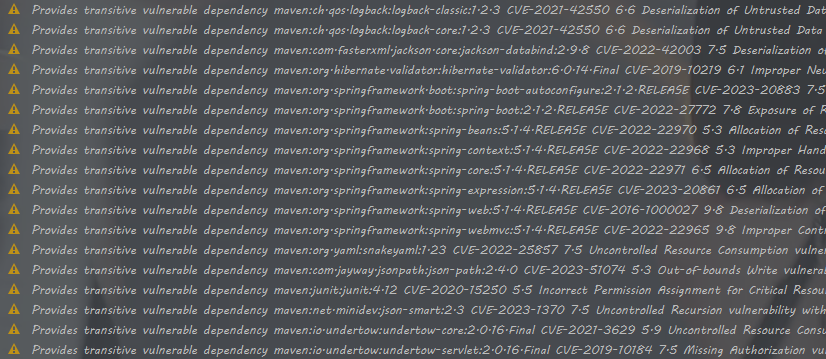

HALO
一个java博客系统，但funny problems everywhere
看着怪像wordpress的。
打开pom.xml，到处都是警告

我一定是和DOCKER有仇，所以只能打开linux虚拟机通过linux的docker进行搭建环境。
pom.xml
1
2
3
4
5
|
<dependency>
<groupId>com.h2database</groupId>
<artifactId>h2</artifactId>
<scope>runtime</scope>
</dependency>
|
这个并没有见过，但看名字和数据库有关，于是搜索，结果为
h2未授权访问漏洞
看不懂思密达
所以转向看controller
任意文件删除
漏洞代码
删除备份
1
2
3
4
5
6
7
8
9
10
11
12
13
14
15
|
//BackupController.java
@GetMapping(value = "delBackup")
@ResponseBody
//fileName文件名，type备份类型
public JsonResult delBackup(@RequestParam("fileName") String fileName,
@RequestParam("type") String type) {
final String srcPath = System.getProperties().getProperty("user.home") + "/halo/backup/" + type + "/" + fileName;
try {
FileUtil.del(srcPath);
return new JsonResult(ResultCodeEnum.SUCCESS.getCode(), localeMessageUtil.getMessage("code.admin.common.delete-success"));
} catch (Exception e) {
return new JsonResult(ResultCodeEnum.FAIL.getCode(), localeMessageUtil.getMessage("code.admin.common.delete-failed"));
}
}
|
理解逻辑就是：
- 请求中有fileName和type，然后调用
System.getProperties().getProperty("user.home")获取当前用户的主目录路径。（System.getProperties() 是一个方法，它返回一个 Properties 对象，该对象包含当前 Java 虚拟机的系统属性）
- 拼接之后得到srcPath， 进行删除，成功就返回消息，失败也但会消息。
vuln
在这里可能存在的问题就是，任意文件的删除。
- 文件名可以进行抓包修改
- 修改目录路径，即使写入了指定路径，但是未进行后续的验证，所以修改路径is true 。后面会发现很多地方都是这样的错误。
一个验证实验
1
2
|
PS C:\Users\won\Downloads> cd D:\sot\..\..\
PS D:\>
|
进行跨目录是可以实现的。（nothing special but for me）
Page
对wordpress的认知里面（或者说是对博客系统的认知），有类似在page或者是post模板处的漏洞，所以继续翻翻。
任意文件内容写入 漏洞代码
1
2
3
4
5
6
7
8
9
10
11
12
13
14
15
16
17
18
19
20
21
22
23
24
25
26
27
28
29
30
31
32
33
34
35
36
|
//ThemeController.java
/**
* 保存修改模板
*
* @param tplName 模板名称
* @param tplContent 模板内容
* @return JsonResult
*/
@PostMapping(value = "/editor/save")
@ResponseBody
//请求中参数有两个，一个tplName，一个tplContent
public JsonResult saveTpl(@RequestParam("tplName") String tplName,
@RequestParam("tplContent") String tplContent) {
if (StrUtil.isBlank(tplContent)) {
return new JsonResult(ResultCodeEnum.FAIL.getCode(), localeMessageUtil.getMessage("code.admin.theme.edit.no-content"));
}
try {
//获取项目根路径
final File basePath = new File(ResourceUtils.getURL("classpath:").getPath());
//获取主题路径
final StrBuilder themePath = new StrBuilder("templates/themes/");
themePath.append(BaseController.THEME);
themePath.append("/");
themePath.append(tplName);
final File tplPath = new File(basePath.getAbsolutePath(), themePath.toString());
//用FileWriter写入tplContent
//使用 FileWriter 对象写入内容，如果指定的文件路径不存在的话， FileWriter 会自动创建一个新的文件。
final FileWriter fileWriter = new FileWriter(tplPath);
fileWriter.write(tplContent);
} catch (Exception e) {
log.error("Template save failed: {}", e.getMessage());
return new JsonResult(ResultCodeEnum.FAIL.getCode(), localeMessageUtil.getMessage("code.admin.common.save-failed"));
}
return new JsonResult(ResultCodeEnum.SUCCESS.getCode(), localeMessageUtil.getMessage("code.admin.common.save-success"));
}
|
vuln
文件内容读取？
1
2
3
4
5
6
7
8
9
10
11
12
13
14
15
16
17
18
19
20
|
@GetMapping(value = "/getTpl", produces = "text/text;charset=UTF-8")
@ResponseBody
public String getTplContent(@RequestParam("tplName") String tplName) {
String tplContent = "";
try {
//获取项目根路径
final File basePath = new File(ResourceUtils.getURL("classpath:").getPath());
//获取主题路径
final StrBuilder themePath = new StrBuilder("templates/themes/");
themePath.append(BaseController.THEME);
themePath.append("/");
themePath.append(tplName);
final File themesPath = new File(basePath.getAbsolutePath(), themePath.toString());
final FileReader fileReader = new FileReader(themesPath);
tplContent = fileReader.readString();
} catch (Exception e) {
log.error("Get template file error: {}", e.getMessage());
}
return tplContent;
}
|
vuln
这个的问题根源就是对目录的不设限制。
question
可以看到确实是根据指定目录进行实例化，为什么可以做到读取别的内容进行返回？
答案，因为可以跨目录，指定目录只是说从哪里开始，但没有限制去哪里，所以可以。
可以写一个demo进行测试理解。